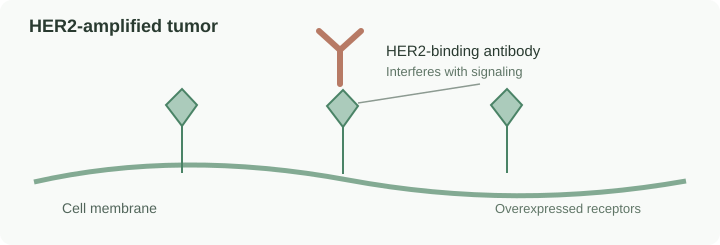

A city made of strings
Mukherjee opens with a passage from Italo Calvino's Invisible Cities. In a fictional city, strings are stretched between buildings to represent relationships. As connections multiply, the city becomes an intricate web.
A cell behaves similarly. Genes and proteins do not work as separate, isolated objects. They communicate through interconnected signaling pathways. Some proteins tell a cell to divide, others to stop, survive, move, or repair itself.
Genes such as ras, myc, RB, and neu sit at important points in these networks. A change in one can influence many others. A cancer cell, therefore, is not merely a cell with one faulty part; it is a system whose communication pathways have been disturbed.
That is why targeting a single cancer gene might sometimes produce a surprisingly large effect. If a tumor depends heavily on one overactive signal, switching it off could disrupt much of the network that keeps the tumor alive.
From neu to HER2
Scientists working on the neu oncogene began finding its counterparts in human cells. One human relative of neu became known as HER2 (also written Her-2 in the book).
The gene produces a receptor protein that crosses the cell membrane and participates in growth signaling. Part of the protein is exposed outside the cell, where an antibody can potentially bind it.
In some cancers, the cell makes unusually many copies of HER2. This is called gene amplification. Extra copies can lead to too much HER2 signaling and a strong drive to grow.
Imagine a classroom where one teacher normally announces when students should begin an activity. Now imagine installing dozens of loudspeakers repeating that instruction constantly. The students may never receive a convincing signal to stop.
This is only an analogy, but it conveys what excessive growth signaling can do.
Why a biotechnology company mattered
The story moves to Genentech, a biotechnology company founded in 1976. Its researchers used recombinant DNA technology to produce proteins in living cells.
Before such methods, many therapeutic proteins were obtained by extracting them from animal tissues or human biological material. Genetic engineering offered a way to introduce a human gene into laboratory cells and use those cells as tiny protein factories.
Genentech had already demonstrated why this could matter for medicine: proteins such as insulin could be made much more systematically.
But blocking a cancer signal was a different challenge. It is easier conceptually to replace a missing protein than to disable a protein that is present in excessive amounts.
How do you turn off an overactive signal without shutting down essential functions in healthy tissue?
Axel Ullrich brings HER2 into the laboratory
Axel Ullrich, working at Genentech, helped isolate and study the human HER2 gene. He saw an interesting biological target, but there was no clear human disease in which the gene's abnormal activity had been firmly established.
A gene alone does not make a useful treatment program. Researchers also need to know:
- Which cancers depend on that gene?
- How can the dependence be measured?
- Can the gene or its protein be blocked?
- Will blocking it actually help a living patient?
Ullrich's laboratory had an important part of the puzzle, but not yet the whole picture.
Dennis Slamon connects the gene to breast cancer
In 1986, Ullrich spoke at UCLA, where oncologist Dennis Slamon heard about HER2. Slamon realized that he had something Ullrich needed: a collection of stored human tumor samples.
Slamon proposed testing those samples for HER2 amplification.
The results were striking. Some breast cancers had very high HER2 amplification, while others did not. The same diagnosis—'breast cancer'—concealed biologically different subgroups.
Slamon also found that HER2-amplified breast cancers tended to behave more aggressively and were associated with worse outcomes in the patients studied.
Why is this important? Because it connected a gene to a clinically meaningful subtype of cancer. The scientists now had a plausible target and a disease in which the target mattered.
The idea of oncogene addiction
The researchers began asking whether some HER2-positive tumors were unusually dependent on the amplified signal.
This dependence is often described as oncogene addiction. Despite possessing many abnormal genes, a tumor can rely heavily on one dominant driver for its continued growth or survival.
Think of a building supported by many structures but depending critically on one central beam. Removing that beam may destabilize much of the building, even though the other materials remain.
However, the idea must be tested rather than assumed. A gene can be amplified in a tumor without necessarily being the only reason the cancer survives. Researchers needed experiments showing that interfering with HER2 would actually stop growth.
Finding a weapon: Antibodies
Antibodies are proteins made by immune cells that recognize and bind specific molecular structures. Scientists learned how to manufacture large quantities of a single antibody using monoclonal-antibody technology.
HER2 was a promising antibody target because part of its protein was exposed on the outside of the cell.
Researchers at Genentech made a mouse antibody that could bind HER2. In 1988, experimental work showed that it inhibited HER2-overexpressing breast-cancer cells.
When the antibody was tested against tumors growing in mice, the results were similarly encouraging: some tumors stopped growing or regressed.
For the first time, all three components seemed to line up:
A molecular target → a tumor that uses that target → a substance that can block it.
But working in a mouse is not proof that a drug is safe and effective in humans. A much harder process remained.

Genentech almost abandons the project
Developing a new human drug is expensive and uncertain. Genentech's executives were concerned that repeated failures in cancer-drug development could damage the company financially.
The company's enthusiasm for oncology diminished. Resources were diverted, and Ullrich eventually left Genentech.
Slamon, however, refused to abandon the idea. He kept traveling to the company, lobbying researchers and executives to continue. Some colleagues found him exhausting and obsessive; others recognized the unusually strong scientific foundation of the project.
David Botstein, Art Levinson, and other supporters helped keep the research alive despite limited resources.
This chapter makes an often-overlooked point: an idea can be scientifically sound yet still fail to reach patients because of institutions, money, and decisions about risk.
The antibody must become suitable for human use
There was another problem. The antibody originally came from mouse cells. When injected into humans, a mouse antibody can be recognized as foreign and trigger immune responses.
Paul Carter, a scientist at Genentech, worked to humanize the antibody. Humanization involved changing parts of the antibody so it resembled a human antibody while preserving the portions important for binding HER2.
This is not simply attaching a human label to a mouse protein. The antibody's three-dimensional structure and binding characteristics have to survive the engineering process.
By 1990, the team had created a humanized anti-HER2 antibody ready for development as a therapeutic candidate.
The medicine would later become known as trastuzumab, commercially called Herceptin.
Barbara Bradfield: The human story
In 1990, Barbara Bradfield, a forty-eight-year-old woman in California, discovered a mass in her breast and a lump under her arm. She underwent surgery and months of chemotherapy.
Then her life was struck by another tragedy: her adult daughter died in a traffic accident in 1991. Soon afterward, Bradfield discovered a new lump near her collarbone. Her breast cancer had returned and metastasized.
She was exhausted, grieving, and reluctant to undergo more experimental treatment. When her tumor was tested at Slamon's laboratory, the HER2 amplification was extraordinarily high.
Slamon called to explain that an antibody trial was opening and that her tumor might be particularly well suited to it. She refused at first. Then, after he called again, she reconsidered.
In August 1992, she met him and examined images of her own tumor. He walked her through the chain of discoveries leading from the cancer gene to the proposed drug.
Bradfield joined the trial. During the interval before treatment, scans had revealed multiple tumors in her lungs.
The early trial: Hope and uncertainty
The trial began with a small group of women with HER2-positive metastatic breast cancer, later expanded. The antibody was given with cisplatin, a conventional chemotherapy drug, under close medical observation.
The women were not interchangeable study subjects. They brought very different hopes, fears, personalities, and experiences of treatment. Their shared circumstances made the trial room an unusual community.
Bradfield had a palpable lump near her collarbone. The women began checking it during visits, almost making it a shared measure of whether the therapy might work.
Within approximately two weeks, the lump softened and shrank. Later scans showed decreases in other lesions, including tumors in her lungs.
This was encouraging, but not every woman responded. Some had stable tumors without shrinkage, making interpretation difficult. One very ill participant died after serious complications during the study.
One dramatic patient response did not eliminate the need for rigorous clinical evidence. The drug still had to prove its value across larger groups of patients.
The difference between discovery and proof
Bradfield's tumor shrinking made the science feel real. Yet the scientists faced several questions:
| Question | Why it matters |
|---|---|
| Did the tumor shrink because of trastuzumab, cisplatin, or both? | A combination trial complicates attribution |
| How often did meaningful responses occur? | One success may not represent the whole group |
| Did patients actually live longer? | Tumor shrinkage alone is not the ultimate goal |
| Were serious harms acceptable? | Benefit must be balanced against risk |
| Would earlier-stage patients benefit? | Disease stage can change a treatment's value |
The next chapter follows the struggle to collect this evidence, while patients understandably demanded access to a drug that might save their lives.
What made HER2 therapy a turning point?
Older cytotoxic chemotherapy attacked common features of many rapidly dividing cells. A drug directed at HER2 aimed to interrupt a specific abnormal signaling dependency in a genetically defined tumor subtype.
That meant two patients with breast cancer might no longer receive identical treatments simply because their tumors arose in the same organ. Molecular testing could help determine which therapy was appropriate.
This is a major step toward biologically informed cancer treatment.
But the chapter avoids portraying trastuzumab as a universal cure. The earliest study concerned a selected group of patients, and some did not respond or could not continue treatment. Larger controlled trials were still essential.
Important scientific terms
| Term | Simple explanation |
|---|---|
| HER2 / neu | A growth-signaling gene whose amplification drives a subset of cancers |
| Gene amplification | A cell makes extra copies of a particular gene |
| Oncogene addiction | Strong tumor dependence on a specific abnormal growth signal |
| Monoclonal antibody | A manufactured antibody designed to bind a defined target |
| Humanization | Engineering an animal-derived antibody to resemble a human antibody |
| Trastuzumab | The HER2-targeting antibody known commercially as Herceptin |
The deeper meaning of Chapter 45
A cancer treatment rarely emerges from one scientist's brilliant moment. Ullrich's molecular work, Slamon's clinical samples, laboratory antibody development, protein engineering, patient participation, and institutional persistence all had to connect.
The chapter also demonstrates why cancer's complexity can sometimes reveal an opportunity. Some breast cancers are particularly aggressive because they rely on a highly amplified driver. That same dependency can become a weakness.
Final takeaway: The 'city of strings' is a network of biological and human relationships. The HER2 story shows how tracing those connections can carry an idea from a gene to a potential drug—and why the next step must be carefully establishing whether the drug improves patients' lives.